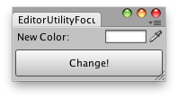

EditorUtility.FocusProjectWindow
public static void FocusProjectWindow();
Description 描述
Brings the project window to the front and focuses it.
This is commonly called after a menu item that creates and selects an asset is invoked.

Changes the color of the selected GameObjects.
using UnityEngine; using UnityEditor;
public class FocusProjectWindowExample : EditorWindow { static Color matColor = Color.white;
[MenuItem("Example/Color Change")] static void Init() { // Get existing open window or if none, make a new one: FocusProjectWindowExample window = (FocusProjectWindowExample)EditorWindow.GetWindow(typeof(FocusProjectWindowExample)); window.Show(); }
void OnGUI() { matColor = EditorGUI.ColorField(new Rect(3, 3, position.width - 6, 15), "New Color:", matColor); if (GUI.Button(new Rect(3, 25, position.width - 6, 30), "Change")) ChangeColors(); }
void ChangeColors() { if (Selection.activeGameObject) { foreach (GameObject t in Selection.gameObjects) { Renderer rend = t.GetComponent<Renderer>();
if (rend) rend.sharedMaterial.color = matColor; } }
EditorUtility.FocusProjectWindow(); }
void OnInspectorUpdate() { Repaint(); } }